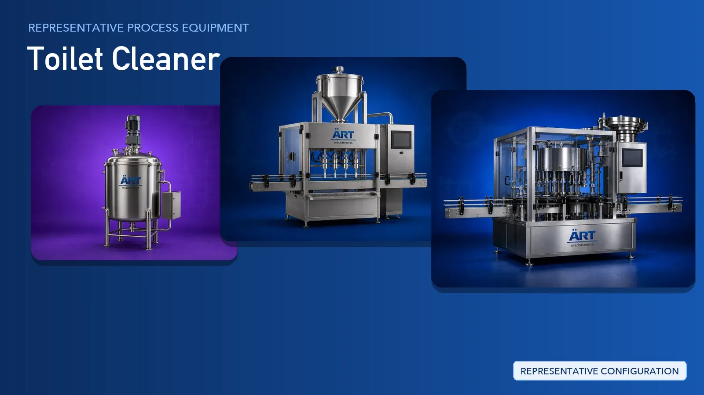

Toilet Cleaner Manufacturing Plant & Machinery Solutions (Acid-Based Liquid Cleaners)
Toilet cleaner is an acid-based home care liquid, usually thickened so that it clings to bathroom surfaces, manufactured by dosing acid concentrate, thickeners, surfactants, fragrance and colour into water.

About Toilet Cleaner processing
ART Mechatronics provides complete turnkey solutions for toilet cleaner manufacturing plants, offering systems for corrosion-aware storage and dosing, mixing, filling, capping, labelling, secondary packaging, and fume extraction with wet scrubbing. Our solutions are engineered for consistent batch quality, safer working conditions and automated operation for domestic and export markets.
Complete Toilet Cleaner Process Flow
Water, acid concentrate, thickeners, surfactants, fragrance and colour are received and held in corrosion-resistant vessels.
Wetted parts are selected for compatibility with acidic media.
Ingredients are dosed into the batching vessel in the sequence defined by the formulation.
Ensures:
- Repeatable batch composition
- Controlled addition of acid concentrate
- Reduced operator exposure
The batch is agitated until the thickener and surfactant phases are fully dispersed into a stable, clinging liquid.
Delivers:
- Uniform, homogeneous blend
- Consistent viscosity and cling
- Stable finished product
Vapours released during acid dosing, mixing and filling are captured at source and treated before discharge.
Supports:
- Safer working environment
- Protection of plant structure and equipment
- Compliance with environmental norms
Empty bottles are rinsed, fed to the filling station and filled with the finished cleaner.
Nozzles and product contact parts are chosen for acid compatibility.
Filled bottles are capped, labelled and checked for closure integrity before secondary packing.
Guards against leakage in storage and transport.
Packs are batch coded, collated into cartons and prepared for warehousing and dispatch.
Ready for retail distribution and export.
Machinery Required for Toilet Cleaner Plant
Turnkey Toilet Cleaner Plant Solutions
ART Mechatronics offers complete turnkey solutions for toilet cleaner manufacturing plants, including:
- Process design & plant layout
- Corrosion-aware storage and dosing systems
- Mixing and thickening systems
- Fume extraction and wet scrubbing systems
- Automation & control panels
- Filling, capping and labelling line integration
- Installation & commissioning
- After-sales support
We customize solutions based on:
- Product type (toilet bowl cleaner, bathroom cleaner, acid-based liquid)
- Production capacity
- Container and pack format
- Material of construction requirements
- Extraction and effluent handling requirements
Why Choose ART Mechatronics for Toilet Cleaner
- Expertise in acid-based liquid processing lines
- Corrosion-aware selection of wetted and contact parts
- In-house fume extraction and wet scrubbing systems
- Mixing, filling and packaging supplied by a single source
- In-house automation and control panel engineering
- Operator safety considered at the layout stage
- Global export capability
Where it's used
Get pricing & specs for the Toilet Cleaner plant
Share the product, target capacity, current process and plant location. These details help our engineers discuss the right machine or line configuration.
One partner, from design to start-up
ART Mechatronics designs, manufactures, installs and commissions your Toilet Cleaner plant solution with regional presence in India, UAE and Thailand.